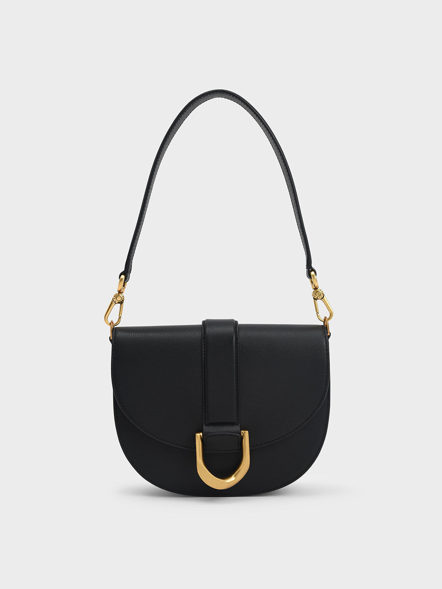
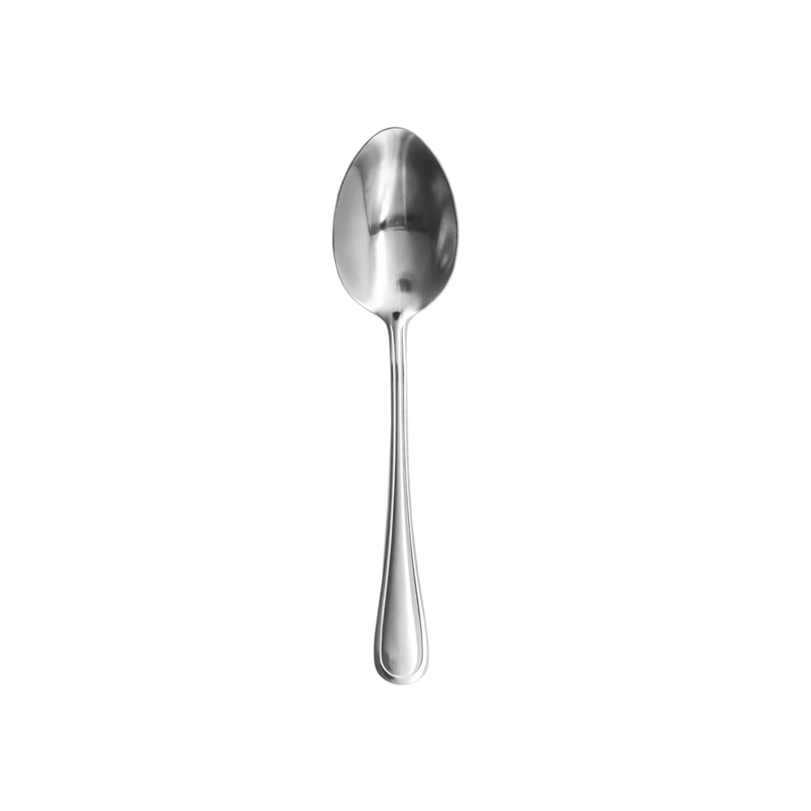
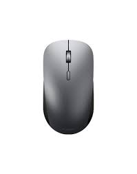
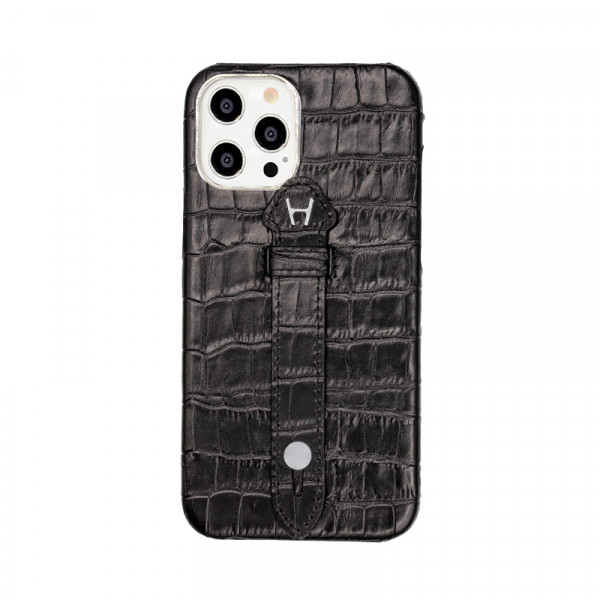
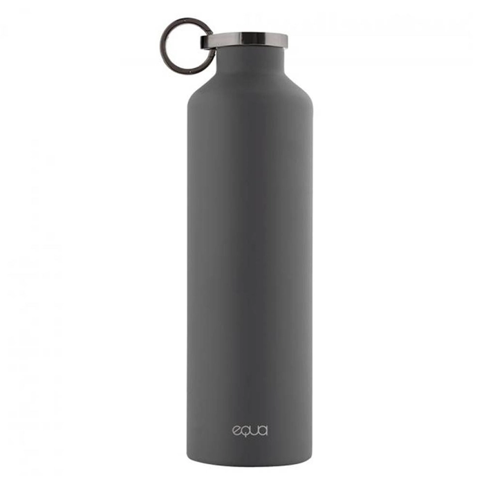
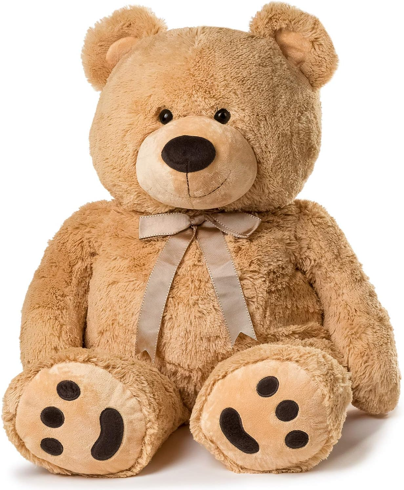

CASE STUDY BETWEEN GOOGLE LENS AND MOBILENET
GOOGLE LENSVS
MobileNet
-
Test Image -

- Test Image - 
- Test Image - 
- Test Image - 
- Test Image -
- Test Image -
- Test Image - 
- Test Image - 
- Test Image - 
Output on GOOGLE LENS - Royal Gala Apple
Output on Mobilenet Model - Mouse, Computer mouse
Result -
GOOGLE LENS is more accurate
Output on GOOGLE LENS - Saddle Bag
Output on Mobilenet Model - Mail bag, Post bag
Result -
GOOGLE LENS is more accurate
Output on GOOGLE LENS - Steel spoon
Output on Mobilenet Model - Hook, Claw
Result -
GOOGLE LENS is more accurate
Output on GOOGLE LENS - Wireless mouse
Output on Mobilenet Model - mouse, computer mouse
Result -
Draw
Output on GOOGLE LENS - Book
Output on Mobilenet Model - Television, Television system
Result -
GOOGLE LENS is more accurate
Output on GOOGLE LENS - Bunch of keys
Output on Mobilenet Model - Safety pin
Result -
GOOGLE LENS is more accurate
Output on GOOGLE LENS - Leather Phone Case
Output on Mobilenet Model - cell, celluar phone, mobile phone
Result -
Mobile Net is more accurate
Output on GOOGLE LENS - Steel Water bottle
Output on Mobilenet Model - Water Bottle
Result -
Draw
Output on GOOGLE LENS - Huge Teddy Bear
Output on Mobilenet Model - Teddy, Teddy Bear
Result -
GOOGLE LENS is more accurate
IHave tested 9 images GOOGLELENS have predicted 8 of them more accurately and MOBILENET was less accurately so according to my case study GOOGLELENS is more accurate.
Developed by - Sana